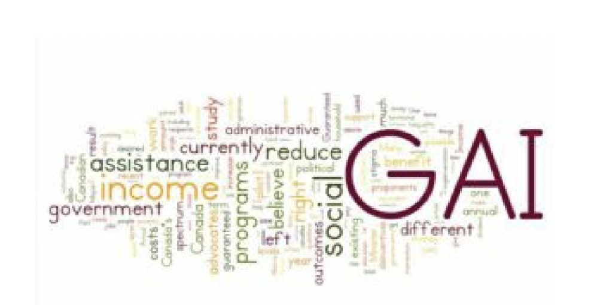

Income Inequality Cause and Effect
After reviewing the evidence above, rank your causes in a table similar to the one below:
|
Rank |
Cause |
Effect |
|
|
|
|
Possible Solutions to Income Inequality
You will investigate some possible ideas on how to address the issue of income inequality. Some possible solutions include modifying the tax system, subsidizing those with lower incomes, microcredits, or increasing incomes through organized labor.
Select the item below to learn more.
Subsidizing those with lower incomes
When investigating issues, it is essential to look at various sources. For the issue of introducing an Annual Guaranteed Income (GAI), check out these sources and use the OPVL model (review the example at the beginning of this activity) to assess each one. Then decide where you stand on the issue.
Read this article
Fraser Institute
Ontario’s basic income pilot will discourage work and
encourage dependency
- The Wynne government will launch a three-year “basic income” pilot program beginning this spring, with the stated goal to “better support vulnerable workers.” In its current form, however, the program will likely harm the very people it intends to help by discouraging work and encouraging dependency on government.
- The program will provide a single person up to $16,989 per year in tax-free government transfers plus a maximum $6,000 more for persons with disabilities (couples will get $24,027).
- The amount will drop by 50 cents for every extra dollar a recipient earns and by a full dollar if the additional income comes from the CPP or EI.
- It will replace Ontario Works (the province’s main social assistance program) and the Ontario Disability Support Program, leaving in place the many other federal, provincial and local government income support programs. And critically, it will not include conditions typically attached to social assistance programs. For instance, to be eligible for Ontario Works are cipient generally must be willing to seek work.
- An unconditional cash transfer, which essentially pays able-bodied Ontarians not to work, raises serious concerns about work disincentives. Indeed, the lack of conditions may encourage dependency on government and discourage people from finding work and improving their situations. 1/3
-
Consider a single Ontarian who doesn’t work and therefore earns no income. He or she will receive the full basic income transfer, which equals 76 per cent of the annual income for a full time job at minimum wage (before taxes). This will, of course, discourage some recipients from working a minimum wage job, causing them to miss out on important work experience that
leads to higher future wages.
- Ontario’s own experience underscores the value of work-related conditions for government transfers. Prior to the province’s social assistance reforms in the 1990s, about one in seven Ontarians were dependent on social assistance. This not only created a financial cost for taxpayers, but also meant a significant share of Ontarians depended on government transfers for their well-being.
- In 1995, the government tightened eligibility rules and work-related requirements (such as job search) in addition to other reforms. Subsequently, the share of Ontarians receiving social assistance fell from 14 per cent in 1994 to 6.5 per cent in the mid-2000s.
- Other jurisdictions have experienced similarresults, demonstrating that conditions on transfers help ensure government assistance remains a safety net for those in difficult circumstances rather than a permanent source of income. A basic income, that lacks conditions and ignores
- the evidence and lessons from Ontario’s past, will lead to higher rates of dependency.
- Moreover, a basic income for the entire population would make many Ontarians, currently ineligible for social assistance, eligible for the basic income transfer. This would then discourage work among lower-income Ontarians not on social assistance, who already lose a significant portion of each additional dollar of income earned to personal taxes and reduced government transfers.
- In fact, an Ontario family with two children and $40,000 of income loses almost 60 cents for every dollar earned to personal taxes and reductions in transfers. To put it in perspective, this rate of “tax” is actually higher than the top marginal income tax rate upper-income earners face in Ontario.
- The basic income program will result in another 50 cents being lost, leading to a total reduction of more than a dollar for each additional dollar earned. This means a basic income when combined with personal taxes and other transfer programs could have the perverse effect of actually reducing the total income of some recipients if they try to improve their situation by earning more employment income.
- This won’t be the first time an unconditional basic income has been tested in North America.
- Experiments in Canada and the United States in the 1960s and ’70s confirm that a basic income tends to reduce the number of hours worked. But there’s a different approach. Another experimental program (called theSelf-Sufficiency
- Project) in British Columbia and New Brunswick in the 1990s, designed to encourage single parents to transition from dependency on welfare to employment, showed that an income transfer conditional on work can reduce dependency on government.
- 2/3 While Ontario’s basic income pilot program may shed new light on the issue, it won’t “help
- more people in our province get ahead and stay ahead,” as the premier suggests.
Read this article:
|
Calgary Homeless Ten things to know about Canada’s guaranteed annual income debate calgaryhomeless.com/blog/ten-things-to-know-about-canadas-guaranteed-annual-income-debate 
By: Nick Falvo, Ph.D., Director, Research and Data, CHF The possibility of implementing a Guaranteed Annual Income (GAI) is currently one of the hottest topics in Canadian social policy. It gained momentum earlier this year when the Ontario government announced it would undertake a pilot study of the GAI. And in June, the Ontario government announced that former Canadian Senator Hugh Segal will advise them on the “design and implementation” of the pilot. A discussion paper he has authored is expected to be made public this fall, and three months of consultations will start soon in Ontario. The main idea behind a GAI is to give every adult in Canada a fixed amount of money with few if any conditions and to do away with several other types of income assistance programs (especially social assistance).
Accordion Select each item to learn more.
1.1.The various proposed GAI schemes have multiple names. The following terms are often used interchangeably: basic income, guaranteed annual income, negative income tax, guaranteed livable income, guaranteed adequate income, social dividend, territorial dividend, state bonus, demogrant, assured annual income and citizen’s wage. Each comes with slightly different connotations and different ‘camps’ of advocates have their own reasons for favouring one term over the other. As of 2009, the most used term in English Canada was the Guaranteed Annual Income; though more recently ‘basic 1/4 income’ has gained momentum and is the term currently used by the Ontario Government. 2.2. There’s already been a Canadian pilot study done on the GAI.From 1974 until 1979,a big GAI study was done in Manitoba known as the MINCOME experiment. Successful outcomes from this study (including evidence that the GAI demonstrated notable health improvement among recipients, without reducing labour supply very much) are often cited in support of a broader adoption of a GAI across Canada. 3.3. It’s not clear who would get the GAI or how much of it they’d get to keep.Some GAI advocates say a well-designed GAI would be ‘phased out’ as an individual’s income rises—i.e. funds paid to individuals who already make more than the GAI would be taxed back. What’s more, some GAI proposals in the past have excluded young single people. Some advocates also believe that different age groups should receive different benefit amounts. Some believe that immigrants should be excluded from such a scheme until such time that they become full-fledged citizens. But other advocates think the GAI should go to everybody and that everybody should be able to keep the full amount. 4.4. Many proponents of the GAI believe it would result in lower administrative costs. One argument in favour of the GAI is that it would result in reduced need for administrative staff. For example, in some Ontario jurisdictions, more than 30% of the total costs of social assistance are attributable to administrative costs. By contrast, my colleague John Stapleton estimates that administrative costs for a benefit where eligibility is determined via the tax system account for just 2-3% of the benefit. But remember: “lower administrative costs” would likely translate into job losses specifically, the loss of relatively well-paying jobs currently held overwhelmingly by women. Across Canada, more than three-quarters of community and social service workers are women. 5.5. The idea of a GAI has support on both the left and right of the political spectrum. Those on the left tend to believe that doing away with other programs will reduce stigma (e.g. the sometimes humiliating experience of having to answer intrusive questions by a welfare worker) and achieve adequacy. Those on the right of the political spectrum like the fact that the GAI might reduce work disincentives currently in place with means tested programs (e.g. earned income being ‘clawed back’ for social assistance recipients). Those on the right also like the fact a GAI could result in ‘smaller government’—i.e. less regulation pertaining to existing programs. (For more on the GAI’s broad political appeal, see this 1989 article, as well as this more recent piece by John Clarke.) 6.6. One reason the GAI has support on both the left and right is that advocates on each side of the spectrum appear to have different ideas as to how generous theGAI would be. Many on the left envisage it as being equivalent to Statistics Canada’s low income measure. As you can see from this table, that would be about $20,000 for a one income household, $30,00 for a two-person household and $40,000 for a four- person household. Many on the right, by contrast, believe the GAI should be equivalent to current social assistance benefit levels. In Alberta, a ‘single employable’ adult on social assistance receives about $8,000 a year. (For more on social assistance benefit 2/4 levels across Canada, see this report.) 7.7. Not all proponents of a GAI agree on its desired outcomes.Depending on who you ask, the GAI appears to have at least a dozen possible desired outcomes: Is the desired outcome to reduce work disincentives?[2] Is it to reduce stigma? Is it to reduce, poverty? Is it to reduce income inequality? Is it to reduce wealth inequality? Is it to increase the generosity of benefits for those currently receiving social assistance? Is it to reduce food insecurity? Is it to improve health outcomes? Is it to improve educational outcomes? Is it to increase gender equality? Is it to increase literacy levels? Is it to decrease criminal activity? Is it all of the above? 8.8. Like any social policy initiative, a GAI could have unintended consequences. Specifically, a GAI—particularly one that’s more generous—could potentially create work disincentives of its own. To put it crudely, if the GAI were to make life ‘more comfortable’ for persons not working (and if it were to reduce the stigma currently associated with social assistance) it’s possible that some people currently working at low-wage, precarious jobs would decide to work less. That’s precisely what this 2013 study found—a study co-authored by Jean-Yves Duclos, who is now Canada’s Minister of Families, Children and Social Development. He is also the Minister mandated by Prime Minister Trudeau to “[l]ead the development of a Canadian Poverty Reduction Strategy...”[3] Whether this potential outcome is deemed a good thing or bad thing depends in part on whether one is on the right or left of the political spectrum. 9.9. It’s hard to estimate the GAI’s cost. When it comes to how much money the GAI should provide to households, there are important differences of opinion between those on the left and those on the right. With so many different possible approaches, it’s hard to ‘cost out’ a GAI. Some proponents believe the GAI would pay for itself and maybe even save money; others believe it would result in more than $100 billion in additional annual program spending each year (net of savings). During any discussion about the GAI, important questions to ask include: Which existing programs would be cancelled? Would Old Age Security and the Guaranteed Income Supplement be cancelled? Would Employment Insurance be eliminated? (According to a recent CBC News article, the Ontario government has indicated that its upcoming pilot won’t “eliminate or consolidate existing poverty-reduction programs, but rather be designed as a top-up to such programs to lift its voluntary participants above the poverty line.”) 10.10. The implementation of a GAI would require a considerable amount of intergovernmental cooperation. How realistic is it to expect all 10 provincial governments, all three territorial governments and the federal government to agree on how much a person needs to live on each year? Which order of government would set the rules? Which would pay for it? Which would administer it? Would there be a separate program in Quebec? How would this work on reserves? How will Indigenous leaders be consulted and where will the funding come from? In Sum. In recent times, Calgary Mayor Nenshi and Edmonton Mayor Iveson have suggested it is time for Alberta to consider a GAI alternative in the province. Any forward movement on a GAI should give serious consideration to all factors and implications of a GAI, including the intricacies of either phasing out or maintaining existing programs, the needs of specialized ¾ populations and cost-sharing.
The author wishes to thank the following individuals for invaluable assistance in preparing this blog post: Robbie Brydon, Hilary Chapple, Herb Emery, Evelyn Forget, Louise Gallagher, Rob Gillezeau, Darcy Halber, Alex Himelfarb, Seth Klein, Ron Kneebone, Diana Krecsy, Aaron Li, David Macdonald, Joe Manion, Lynn McIntyre, Kevin Milligan, Allan Moscovitch, Gautam Mukherjee, Jim Mulvale, Sheila Regehr, Gayle Rees, Mario Seccareccia, Munir Sheikh, Richard Shillington, Wayne Simpson, Madison Smith, John Stapleton and Margot Young. The views expressed in this blog post are those of the author, and not necessarily those of the Calgary Homeless Foundation. Any errors are his.
|
Read this article:
Andew Coyne: How a guaranteed minimum income could work in Canada
Andew Coyne: How a guaranteed minimum income could work in Canada nationalpost.com/opinion/andew-coyne-how-a-guaranteed-minimum-income-could-work-in-canada
The Swiss may have just voted to reject a proposal for a guaranteed minimum income — also known as a guaranteed annual income, basic income guarantee or, increasingly, just basic income — but that hardly means the idea is dead. Pilot projects and feasibility studies are in the works across the developed world, from the Netherlands to California. In Canada, the federal Liberals, along with governments in Ontario, Quebec and Alberta have expressed interest in the concept.
What the Swiss vote did highlight, however, is the widely diverging notions represented by that deceptively simple label. While the basic income is often said to enjoy support across the political spectrum, it’s clear that left and right have very different ideas of what it would mean, both in terms of how generous the income guarantee would be, and how it would be financed.
The model on which the Swiss voted was at the outer limits of what anyone has imagined a basic income could or should entail. At 2,500 Swiss francs a month (about $40,000 a year) for every man, woman and child in the country, the gross cost of such a program in Canada would come to about $1.4 trillion, or more than two-thirds of our gross domestic product. Even netting out the money not spent on the programs it replaced, the Swiss plan was reckoned to cost a quarter of GDP in additional taxes. No wonder voters rejected it.
A pilot project Finland has planned for next year, paying $1,200 a month, is more modest, but would still entail a gross cost of $515 billion annually if implemented in Canada. Both are a long way from the proposal put forward 30 years ago in this country by the Macdonald royal commission on the economy. Its Universal Income Security Program (UISP) would have paid a maximum of just $3,750 annually per adult, or $9,000 per family of four. Even allowing for the rough doubling of prices since then, that’s a relatively meagre proposition.
Still, in the broad strokes the idea’s supporters have much in common. Take today’s jumble of overlapping income support programs, some in cash, some in kind, each with a different clawback rate, and rationalize them into one income-adjusted payment. The universality of the benefit would ensure no one falls between the cracks. Simplification would mean less confusion on one side of the exchange, less bureaucracy on the other. Converting in-kind benefits, such as subsidized housing or drugs, into cash would give recipients more control over their lives.
Most important, slashing the steep, often confiscatory implicit tax rates facing welfare recipients, as earned income rises and benefits are reduced — they can end up worse off for taking a job, when benefits in kind are taken into account — would restore incentives to work. As the Senate committee on social affairs reported in 2009, “the system that is intended to lift people out of poverty is substantially broken, often entraps people in poverty, and needs an overhaul.”
(One of the oddest objections to the basic income idea, in this light, is that it might reduce work incentives. Whatever minimal inducement to idleness there may be in, say, a $10,000 annual income guarantee, it is trivial compared to the benefits of cutting implicit tax rates to 20 or 25 per cent. Neither is a basic income needed as a substitute for wage labour, as some advocates contend: robots are no more likely to make humans obsolete in the 21st century than threshing machines did in the 18th.)
The differences arise when you get into the details. The arithmetic is inescapable: the more generous the basic benefit paid to those with no income at all, the more sharply it must be taxed back, if the costs of the program are to be kept within realistic bounds. Conversely, gentler tax-back rates imply a much lower base amount.
There are limits, too, to the sorts of programs a basic income can or should replace. There’s a reason we have separate, contributory employment insurance and pension programs, for example — they serve a different purpose, maintaining incomes at levels comparable to what contributors earned at work, rather than merely assuring them of a decent minimum. Even the narrower aim of rationalizing traditional welfare programs typically runs into resistance, whether out of concern that simply handing out cash to vulnerable people isn’t enough to get them back on their feet or for more venal motives.
OK, so maybe a one-size-fits-all basic income guarantee is out of reach, at least at one go. It’s still possible to move in that direction, one piece at a time. Indeed, we already have what amount to basic income guarantees for children in the new Canada Child Benefit (combining the old Universal Child Care Benefit, the Canada Child Tax Benefit and the National Child Benefit Supplement) and the elderly, via Old Age Security and the Guaranteed Income Supplement. The federal Working Income Tax Benefit is a basic income for the working-age population, in embryonic form.
Could the WITB be merged with OAS/GIS, the basic personal exemption, other federal and provincial tax credits, and provincial social assistance programs to create a universal adult income guarantee? In principle, certainly. Would it be worth some additional cost? Again, yes: ensuring no one goes without, while restoring work incentives and granting greater choice in public services, would seem one of the best uses of public funds imaginable.
But getting federal and provincial governments to agree on this? Alas, some things are too much to hope for.
Watch this video:
What's better - a higher minimum wage, or guaranteed minimum income?
What is Universal Basic Income? | Robert Reich
Select the item below to learn more.
2. Labour
Labour unions are one solution to the unequal distribution of income. Some terms you may need to become more familiar with are below. Collective bargaining - negotiation of wages and other conditions of employment by an organized body of employees. Collective agreement- the final contract negotiated between workers and employers that sets out the agreed-upon roles, responsibilities, etc. of each stakeholder.
Read this article:
Read this article:
What an employer can't do when workers want to form a union
What an employer can't do when workers want to form a union cmaw.ca/become-member/organizing/employers-cantLabour law prohibits employers from doing certain things to deter employees from joining a union. Labour law prohibits the following "Unfair Labour Practices":
- Management threats about job loss, layoffs, loss of benefits because of union.
- Friendly manager's offer of assistance to help workers join the union.
- Leaflets from anti-union employees if they have been copied on machines at work.
- Anti-union employees holding meetings at work.
- Reassigning union supporters to less desirable shift/work area without cause or reasonable business justification.
- Laying off Union supporters without business justification.
- Transferring or firing Union supporters without cause or proper justification.
- Management calling union supporters in for interviews.
- Management intimidating workers by saying she/he knows who's signed cards.
- Anti-union "revocation" cards circulating during work time.
- Management posting or circulating threatening, intimidating or coercive letter or leaflet.
- If unfair labour practices occur during an organizing campaign at your workplace, contact your
- union's representatives as soon as possible.
- What an employer is permitted to do
Employers are permitted by law to do the following when employees want to form a union:
- Employers (and that means all management people including supervisors) can tell employees what they think about a union so long as they don't use threats or undue influence.
- Employers can make a pitch for the company or organization and say how good the working conditions are.
- Employers can guess the questions about the union that might be bothering people and give their answers. But they're not supposed to put pressure on workers.
- Employers can give everyone a raise or increase benefits during an organizing drive and some do. (There are restrictions on what an employer can do once the union has applied for a union certificate and also once the union gives notice to bargain the first collective agreement. The rules vary by jurisdiction. Generally the union has to agree to changes, including wage increases.)
- Employers can start to hold monthly, weekly or daily meetings to solve problems.
- Employers can set up a suggestion box.
- Employers can set up a complaint process.
- 1/2 Employers can provide free coffee and doughnuts for employees.
- Employers can send letters to their employees' homes.
Not all countries have the same access to organize. Look at this comparison and recall that countries have different economic systems.

3. Microedit
Read this article:
What Will the Next Generation of Microcredit Products for women Look Like?
Poverty-action.org/blog/what-will-next-generation-microcredit-products-women-look
Editors note: This blog is a cross-post from theSEEP blog
In 2006, the Nobel Prize Committee awarded a Nobel Peace Prize to one of the original architects of modern-day microfinance, Professor Muhammad Yunus. Professor Yunus’s microfinance model, along with similar group-liability lending models targeting women throughout the world, was based on a simple premise. Women could increase their incomes – and thereby, their own lots and the future of their families – by owning and operating their own microenterprises. Yunus and others surmised that a lack of access to capital stood between many of these women and the ability to invest in income-generation activities. Indeed, many structural barriers often prevent women from accessing credit from formal sources: lack of assets for collateral, lack of formal identification documents, and a lack of financial products targeting them directly.
What this theory of change perhaps failed to take into account, however, was the enduring influence of social gender norms and how they often play a role in circumventing larger impacts of access to working capital on women’s empowerment. In general, the evidence on the impact of access to credit on female entrepreneurs has shown little to no transformative effect on consumption or women’s empowerment outcomes (for more information on this, see Abhijit Banerjee, Dean Karlan, and Jonathan Zinman’s overview of Six Randomized Evaluations of Microcredit in the American Economic Journal). Researchers are finding instead that financial products can have an impact on women’s empowerment, but only when these products are designed in a way that is responsive to gender norms and the barriers and limitations they might normally create. What would it take for the next generation of financial products for women to be gender responsive?
Let’s consider some of the potential obstacles stemming from social norms and gender roles that may impact women’s entrepreneurship:
Demands on time: Women who take on unpaid labor in the household, for example as caretakers for children or elderly family members, may have less time to devote to business activities;
Business activities: Women and men may also tend to cluster in different types of business activities, with different potential for earnings and growth;
Mobility restrictions: In some cultures, women may have limited mobility and be unable to easily travel or work outside the home independently;
Degrees of control over resources: Women may have limited bargaining power within a household, and thus limited control over how their own resources and assets, including loans and earned income, are invested.
An Innovations for Poverty Action study conducted by economist Nathan Fiala may shed more light on the impact this last point has, intra-household bargaining power, on outcomes for women. In a randomized study in Uganda, Fiala finds that women face strong constraints to their decision-making power, and tend to hide resources as the only way to maintain control. He found that men are less likely to fear losing resources within the household and don’t hide money as frequently. Fiala looked at the impact of business capital – either by loan or grant – on both men and women’s economic outcomes, and found that women who hide money from their husbands experienced increased economic outcomes, while those who don’t see a decrease. Conversely, men in the study who do not hide money from their wives saw increased economic outcomes. This may help explain some of the lackluster impacts of microcredit among women, particularly those who experience low levels of bargaining power within the home.
Digital payments are emerging as a promising tool for promoting women’s economic empowerment, precisely because they allow for elements of privacy and control that cash does not. Digital payments, through either a debit card or a mobile money product, for example, can give women exclusive access to their own resources and keep information about their balances and financial activities private. Recent studies on the impact of digital payments for women are indeed promising. In India, for example, Field et al. looked at women participants in a public workfare program who received their wages directly deposited into a personal account, compared to women who were paid through their husband’s account, which was standard practice. They found that these women were more likely to work outside of the home, a difference which was especially pronounced among those women who hadn’t worked before or whose husbands disapproved of women working.
Another study in Niger by Aker et al. looked at the impact of delivering social benefits transfers electronically versus in cash, and found that the likelihood that the intended recipient, a woman, was responsible for receiving the transfers increased from 8 to 47 percent. What’s more, those women who received digital transfers increased their diet diversity by buying more types of food items.
These emerging lessons on women’s bargaining power, privacy, and control provide important lessons for future iterations of microcredit products for women. For example, microcredit delivered via digital payments may be a powerful tool to not only reduce capital constraints for women microenterprise owners, but also to help them retain control over investment decisions. Giving women’s businesses the ability to accept digital payments may also be an impactful way to ensure that they retain control over their earned income. Of course, digital finance – like Yunus’s original lending circles – is by no means a silver bullet for women’s empowerment. Women are more likely to not own their own personal mobile phones which would allow them to access mobile money, for example. There is still much to learn about how to build trust in digital products, help women understand their rights and responsibilities when using new products, and create cost-effective distribution channels. There is a need for more evidence on the ways that financial products, when appropriately designed, can help to directly address the gender norms which may still limit women’s success.
Watch this video:
FINCA Empowerment: The Story of Mama Kapu